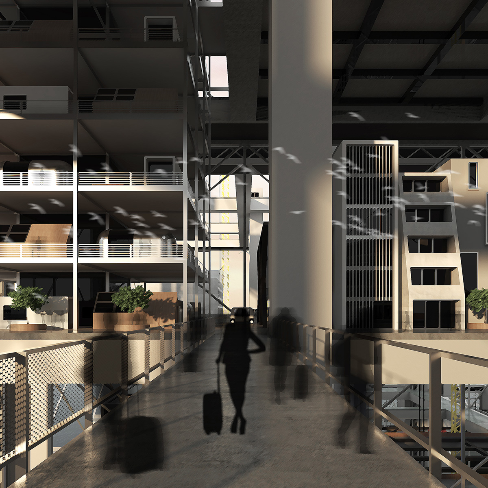
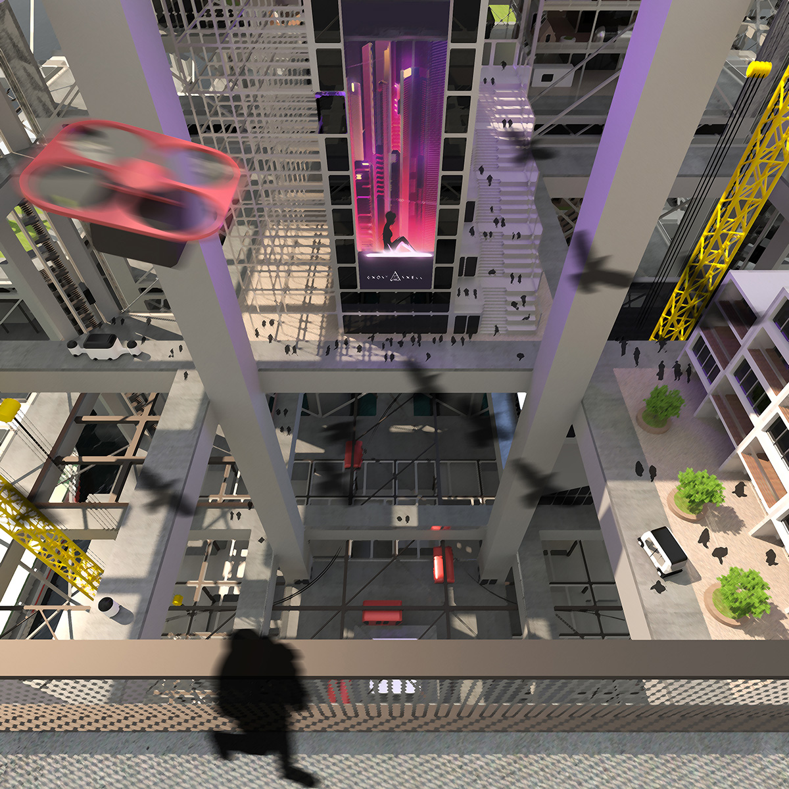
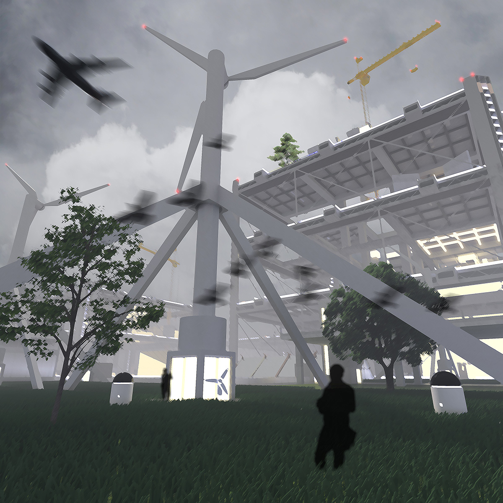

INFINITE CITY
We live in a placeless world where matters and values are located in movements rather than place. When the placeless nature of digital life projects onto
urban experience, we find ourselves roaming between samples of displaced cultures labeled by trends, opportunities, and lifestyles. The advanced personal mobility
resembles hyperlinks that direct us across different activities without sensing the meanings in between. As we move faster, cities have becoming infinite accumulations and replacements
of atomized assets without social or spatial locality.
This project is an open-ended exercise of architectural imagination in an alternative world where a placeless city expands three-dimentionally upon megastructural frames.
The megastructure modules emerge from water, connect into grids, and grows vertically for more lots to build. As the infrastructural grid stretches, the city populates with an extending circulation
of people and material. The people here are always on the move to maximize their working and living experience across activities of different 'units' without having a fixed
residency in place. On the other hand, they have established another sense of home and belongingness with their IDs in online communities. Thus, the phone time on lifts, buses,
trains, boats, and flights between activities is often seen as curative sessions for homesickness.







